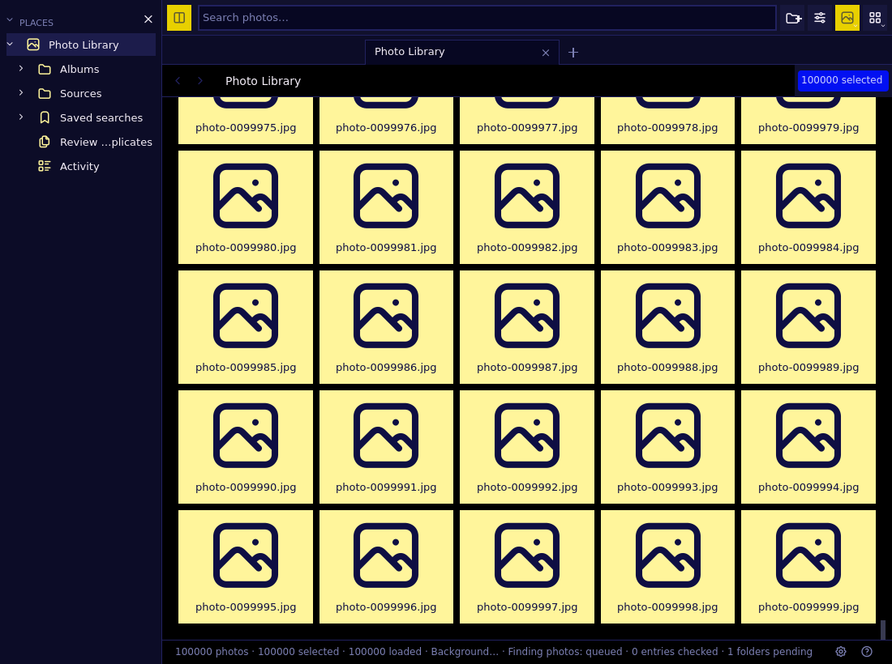

Assessment
The branch is not ready for broad use with large photo libraries. The most serious measured problem is controller work: large selections cause a one-second frame, and normal photo frames scan the entire loaded collection even when the inspector is hidden. Background metadata refreshes amplify small updates into multi-second full-prefix reloads.
The ordinary filesystem browser performed substantially better. All 16 Release suites passed, 100,000 catalog IDs were traversed without duplicates, concurrent edits retained database integrity, and copy fixtures matched byte for byte. These passes coexist with specific metadata, migration, restore and integration failures described below.
This report leaves production code unchanged for review. It is a bounded audit of one revision, not a claim that every line or platform is proven safe.
1.07 secondsone no-cursor selection frame at 100k
26.16 msnormal photo Grid frame at 100k
16 / 16Release suites passed
190,000parser mutations without sanitizer findings
All timings use the same frozen Release build, GCC 16.2.0 with effective -O3 -DNDEBUG. The host is a 24-thread Intel Core Ultra 9 275HX with about 62 GiB RAM and local ext4 storage. Audit performance jobs ran serially; normal host activity was not stopped. Filesystem caches were warm and were not globally dropped. Debug builds also inherit Nix’s -O2; they are not an unoptimized comparison.
Ordinary browser, real executable on a private hardware Wayland display
| Entries | Folder shown median | p95 / max (7 samples) | Idle PSS | Idle RSS |
|---|
| 20 | 100.54 ms | 105.48 ms | 38.56 MiB | 88.29 MiB |
| 10,000 | 105.72 ms | 109.96 ms | 49.47 MiB | 99.19 MiB |
| 100,000 | 245.29 ms | 249.16 ms | 82.08 MiB | 131.80 MiB |
Unmodified application; eight starts per fixture, first excluded as warmup. Intel Mesa hardware renderer on a private headless compositor; no input or changes to the user’s desktop. “Folder shown” is the application callback, not physical input-to-photon latency. Idle: five-second settle, three three-second CPU samples; no CPU-clock increment recorded in these samples. Memory is one settled process, not a long-run leak test. Raw startup, idle and renderer evidence.
At 100k ordinary directory entries, warm directory completion was 124.34 ms median and the first chunk 1.81 ms. This developer tool differs from full app startup above. Finder enumerated 100k entries without truncation, with completion around 22 ms and rematches around 1–2 ms. Directory samples · Finder samples.
Native photo controller and views
| Operation | 1,000 rows | 10,000 rows | 100,000 rows |
|---|
| Focused metadata snapshot (30 samples) | 0.04 ms | 0.77 ms | 23.17 ms |
| Browser Grid, inspector hidden (30 samples) | 1.23 ms | 2.08 ms | 26.16 ms |
| Browser Details, inspector hidden (30 samples) | 1.78 ms | 2.47 ms | 28.92 ms |
| No-cursor band selection frame (1 sample) | 4.46 ms | 36.52 ms | 1,072.69 ms |
| Bulk Properties (1 sample) | 2.69 ms | 38.88 ms | 1,163.95 ms |
| Restore/load requested prefix (1 sample) | 42.42 ms | 648.23 ms | 9,457.93 ms |
| 30 refresh requests coalesced to completion (1 sample) | 78.11 ms | 575.24 ms | 9,065.46 ms |
Actual Browser/controller and shared draw methods, synthetic catalog records, paused metadata, surfaceless software GL with glFinish, animations disabled. These are CPU/render harness timings, not real-GPU presentation or image-decoding throughput. Single observations are labeled as such; CSV p95 fields on single-sample operations are not distribution evidence. UI methodology and all samples.
| Direct shared view at 100k | Median draw | Draw + arrow median |
|---|
| Grid | 0.65 ms | 1.13 ms |
| Details | 3.08 ms | 2.87 ms |
| Columns | 0.31 ms | 0.40 ms |
The controller’s focused metadata lookup alone took 23.17 ms at 100k. The direct Grid draw took 0.65 ms. Direct view draw uses 60 samples after 10 warmups; draw-plus-arrow uses 30. These are different harness scopes, not an exact subtractive profile, but the isolated lookup and call-path evidence identify the main avoidable overhead. Direct Details draw was 3.08 ms: a worthwhile inherited optimization, not a one-second freeze.
Generic 100k snapshot refresh preserving selection took 42.39 ms; copying a snapshot for a 200-row append took 40.93 ms. The full photo harness peaked at 1.59 GiB RSS / 1.47 GiB PSS while loading, selecting, aggregating and refreshing 100k rows. This includes JSON/entry/snapshot copies and software GL. High retained allocator memory after filtering is not by itself a leak. The generic 100-snapshot churn test showed no RSS growth. Memory samples.
Captured native stress frame
Synthetic metadata-only rows use placeholder icons; this capture is not a preview-quality test. It confirms the familiar native frame and the 100k-selected/no-cursor state used for the stall measurement.

Catalog queries and batch amplification
| Operation | Samples | Median | p95 |
|---|
| First 200 photos | 10 | 15.18 ms | 20.16 ms |
| 200 photos at middle offset | 10 | 23.45 ms | 24.00 ms |
| Final 200 photos | 10 | 31.60 ms | 31.86 ms |
| Capture-date filter/sort | 10 | 60.80 ms | 64.82 ms |
| 1,000-job history | 10 | 97.35 ms | 102.40 ms |
| Pending 4 after 100k complete | 10 | 10.00 ms | 11.04 ms |
| Claim one photo | 256 | 9.34 ms | 18.03 ms |
| Persist one metadata result | 256 | 9.38 ms | 16.65 ms |
Loaded-prefix reloads through the ABI plus Python JSON decoding took 336 ms / 1.11 s / 4.41 s for 10k / 30k / 100k respectively (one observation each). The burst of 30 controller refresh requests took 9.07 s: the first request starts one full-prefix load and the remaining requests coalesce into one follow-up load, so this measures TWO loads plus controller publication and selection retention. It is not a single-refresh latency. Do not subtract the 4.41 s backend measurement to infer frontend overhead or add these separate workloads together.
Export of 100,256 records produced 64,657,204 JSON bytes in 2.35 s; restore matching existing records took 6.34 s. Fresh-catalog restore of 256 real-file identities took 70 ms. Synthetic records do not establish fresh filesystem identity, so the two restore scopes are explicitly different. The catalog harness peaked at 785 MiB RSS including Python’s retained exports and query objects, not steady application memory. Full query/restore/concurrency evidence.
Copy efficiency
For a 256 MiB dense file plus 1,000 small files (269,624,456 bytes total), Rummage’s copy returned in 0.115 s median versus 0.064 s for cp -a. After explicitly syncing all destination files and directory, totals were 4.13 s versus 4.17 s. Every file hash matched. Three trials each, warm cache, non-alternating order: this supports similar observed synced throughput, not a claim of multi-GB/s durable copying. Copy trial records.
Prioritized findings
P1: blocks practical use at the tested scale. P2: correctness, integration or material efficiency problem to address before broad use; a static risk remains explicitly unmeasured. P3: product clarification, tooling or maintenance work. No critical/data-loss exploit is established by this audit. Source lines refer to the frozen revision.
| ID | Priority | Finding | Origin / confidence |
|---|
| F01 | P1 | Large photo selections can stall every frame, even with the inspector hidden | Introduced
Reproduced; native harness timing |
| F02 | P2 | A small background metadata batch reloads the entire browsed collection | Introduced
Confirmed call path; catalog and controller timings |
| F03 | P2 | Malformed derived camera text can stop a metadata work batch | Inherited protocol truncation; new photo consumer exposes failure
Reproduced end to end |
| F04 | P2 | Restore accepts exclusions that make future source scans fail | Introduced
Reproduced |
| F05 | P2 | An interrupted migration cannot retry while its valid backup exists | Introduced
Reproduced twice |
| F06 | P2 | Catalog timestamp conversion overflows signed nanoseconds | Introduced; a checked shared filesystem conversion already exists
Reproduced; strict-overflow UBSan diagnostic |
| F07 | P2 | Album counts include hidden replacements and can open to no results | Introduced
Reproduced with a synthetic recorded-inode mismatch |
| F08 | P2 | Generated website fails its link gate and advertises removed packages | Introduced integration regression
Reproduced generated-site check |
| F09 | P2 | Photo UI strings bypass translation extraction | Introduced
Static verified; strict catalog checker does not detect unmarked text |
| F10 | P2 | Ordinary Details view rebuilds all rows on draw and input | Inherited from main
Confirmed code path; native harness timing |
| F11 | P2 | Slow mount pathname lookups can block the UI thread | Inherited operations; new source-watch traversal amplifies exposure
Static call-path risk; no slow-mount fault injection |
| F12 | P2 | Ordinary bulk drag and context menus use quadratic membership scans | Inherited from main
Static complexity finding; no latency measurement |
| F13 | P2 | Metadata orchestration duplicates pending lookup and catalog initialization | Introduced
Confirmed call counts; timings in catalog appendix |
| F14 | P3 | Restore behavior needs one clear user-facing contract | Introduced
Merge reproduced; automatic-scan path is static evidence |
| F15 | P3 | Photo drag and several scale limits need clearer affordances | Introduced restrictions or known documented limits
Static verified |
| F16 | P3 | Sanitizer migration test needs an instrumented-library host launcher | Test harness integration
Reproduced; corrected invocation passes |
P1 · F01 — Large photo selections can stall every frame, even with the inspector hidden
Introduced · Reproduced; native harness timing
Rubber-band selection can leave the cursor unset. properties(true) then falls back to every selected ID and scans the selected-ID vector for every loaded row. Browser constructs this snapshot every frame, including when InfoPane is hidden. At 100,000 selected rows the membership loop entails roughly five billion comparisons per frame. Bulk Properties uses the same quadratic path.
Recommended action: Use direct ID lookup for focused metadata and hashed membership or selected_snapshots_ for bulk summaries. Cache summaries by selection/data revision, return no focused snapshot without a cursor, and skip hidden-pane work. Verify rubber-band selection and cross-scope selections at 1k/10k/100k.
Source: src/views/src/folder.cpp:283, src/views/src/photo_library.cpp:993, src/views/src/browser.cpp:4188
Evidence: ui/findings.txt · ui/release-photo-10000.csv · ui/release-photo-100000.csv
P2 · F02 — A small background metadata batch reloads the entire browsed collection
Introduced · Confirmed call path; catalog and controller timings
A successful work response refreshes the loaded prefix and watcher subscriptions even for metadata-only changes. At 30,000 loaded rows one refresh makes thirty 1,000-row requests, thirty COUNTs and 60,000 per-row tag/album SELECTs, then reconstructs all fs::Entry objects. Coalescing limits simultaneous work but not the cost of each refresh. Watch subscriptions also revisit already registered directories.
Recommended action: Return changed IDs and discovery/watch revisions. Update affected rows or a bounded window; refresh watches only when directory availability/topology changes. Batch row enrichment and reuse prepared statements without removing identity or durability checks.
Source: src/views/src/photo_library.cpp:568, src/views/src/photo_library.cpp:832, src/photos/src/catalog.cpp:574, src/photo_client/src/source_watcher.cpp:160
Evidence: architecture/report.txt · catalog/stress-release-100000.json
P2 · F03 — Malformed derived camera text can stop a metadata work batch
Inherited protocol truncation; new photo consumer exposes failure · Reproduced end to end
The helper protocol truncates camera text to 255 raw bytes and can split a UTF-8 character. A decodable fixture JPEG containing a long non-ASCII EXIF Make value reaches the real helper/client pipeline, where JSON serialization throws. The work request fails, leaving one unfinished metadata claim and no per-photo outcome. This is adversarial metadata, not evidence that every long EXIF value is standards-compliant.
Recommended action: Bound or normalize protocol text at UTF-8 boundaries and contain serialization/decode failures per photo. Durably complete or release the claim and continue healthy photos. Add the actual helper-to-client regression fixture.
Source: src/isolate/src/protocol.cpp:138, src/photo_client/src/client.cpp:203, src/photo_client/src/client.cpp:228
Evidence: catalog/protocol_utf8.log · catalog/metadata_utf8_real.json · catalog/metadata_utf8_real.py
P2 · F04 — Restore accepts exclusions that make future source scans fail
Introduced · Reproduced
Restore accepts sources[].exclusions=[7] because it validates only the array container, reports success, and commits. Later scanning expects strings and fails. Re-adding the source with [] preserves the bad stored exclusions. The oldest failing scan can prevent later queued jobs from running.
Recommended action: Reuse the add-source validator for restore, including element types and bounds, before any commit. Reject an invalid restore atomically and test subsequent scans.
Source: src/photos/src/catalog.cpp:479, src/photos/src/catalog.cpp:516, src/photos/src/catalog.cpp:1111, src/photos/src/catalog.cpp:1711
Evidence: catalog/correctness-debug.json · catalog/correctness_repros.py
P2 · F05 — An interrupted migration cannot retry while its valid backup exists
Introduced · Reproduced twice
If a process exits after creating .before-schema-2.backup but before committing migration, reopening refuses to overwrite that backup. It tells the user to choose a new path, but the UI exposes no such internal path choice. The catalog and backup remain intact; this is an availability/recovery defect.
Recommended action: Preserve the backup and create a unique new one, or validate and safely reuse the existing snapshot. Add interrupted-backup retry coverage. Never delete the only backup automatically.
Source: src/photos/src/catalog.cpp:164, src/photos/src/catalog.cpp:221, tests/photos_migration.py:65
Evidence: catalog/correctness-debug.json · catalog/correctness_repros.py
P2 · F06 — Catalog timestamp conversion overflows signed nanoseconds
Introduced; a checked shared filesystem conversion already exists · Reproduced; strict-overflow UBSan diagnostic
A real temporary file with mtime 10^19 ns is representable by the filesystem but cannot fit signed 64-bit nanoseconds. Query returns -8446744073709551616. A companion build with -fstrict-overflow diagnoses signed overflow. The normal Nix wrapper supplies -fno-strict-overflow, so the standard sanitizer build silently returned the wrong value.
Recommended action: Use a checked conversion and explicit out-of-range representation or handled error. Retain seconds/subseconds for identity checks; apply the same policy to all three catalog conversions.
Source: src/photos/src/catalog.cpp:572, src/photos/src/catalog.cpp:1952, src/photos/src/catalog.cpp:1999, src/fs/src/trash.cpp:1012
Evidence: root/ubsan-timestamp-strict.log · root/strict-catalog-commands.json · catalog/timestamp_overflow.py
P2 · F07 — Album counts include hidden replacements and can open to no results
Introduced · Reproduced with a synthetic recorded-inode mismatch
After inode replacement, the old photo ID retains annotations and album membership but is hidden as replaced; the new visible ID has no annotations. Albums count all memberships while default queries hide replaced/inactive rows, producing count 1 and zero visible results. This is not annotation erasure. It explains a class of empty-album behavior, not proof of the cause of the user’s earlier incident. Inode-unstable mounts require an explicit reconciliation policy.
Recommended action: Make counts match visible results or show visible/retained counts and provide access to retained associations. Design reviewed reconciliation for unstable identities; do not automatically equate filenames or weaken destructive-operation guards.
Source: src/photos/src/catalog.cpp:603, src/photos/src/catalog.cpp:1005, src/photos/src/catalog.cpp:2524
Evidence: catalog/inode_replacement_policy.json · catalog/inode_replacement_policy.py
P2 · F08 — Generated website fails its link gate and advertises removed packages
Introduced integration regression · Reproduced generated-site check
The downloads template still advertises separate media/pdf packages and links to the removed optional-preview-packages anchor. The new Photo Library guide is absent from website navigation/content generation, so configuration links to a missing route. Hugo build and the Markdown documentation checker pass; the actual generated-site check fails twice.
Recommended action: Update package copy, register the guide, and rerun website/check.py. Align THIRD_PARTY.md and architecture documentation with the single optional photo add-on.
Source: website/layouts/downloads.html:22, website/data/navigation.toml:1, docs/configuration.md:92, THIRD_PARTY.md:22
Evidence: architecture/website-check.log · architecture/extra-checks.json
P2 · F09 — Photo UI strings bypass translation extraction
Introduced · Static verified; strict catalog checker does not detect unmarked text
PhotoLibrary.cpp contains no i18n tr/trf/mark calls. Add folder, pause/resume work, gentle pace and progress text are raw English. Enable Photo Library also lacks catalog coverage. Seven-language catalog checks pass because they validate marked messages, not all user-facing literals.
Recommended action: Mark every new user-facing string, use plural-aware formats, extract messages, and test a non-English locale through source/album/restore/error paths.
Source: src/views/src/photo_library.cpp:939, src/views/src/photo_library.cpp:1167, src/views/src/settings_dialog.cpp:226
Evidence: architecture/report.txt · architecture/i18n.log
P2 · F10 — Ordinary Details view rebuilds all rows on draw and input
Inherited from main · Confirmed code path; native harness timing
Details reconstructs the flattened shared_ptr row list and searches the cursor across all entries even when only a small viewport is visible. This makes deep folder drawing and navigation scale with total folder size. Grid and Columns primarily visit visible entries.
Recommended action: Cache flattening against folder/expansion revisions or directly index the root list when there are no expanded rows. Preserve cursor/reveal behavior and compare 1k/10k/100k draw/input samples.
Source: src/views/src/details_view.cpp:94, src/views/src/details_view.cpp:567, src/views/src/details_view.cpp:586
Evidence: ui/findings.txt · ui/release-view-100000.csv
P2 · F11 — Slow mount pathname lookups can block the UI thread
Inherited operations; new source-watch traversal amplifies exposure · Static call-path risk; no slow-mount fault injection
Restored tabs, folder shortcuts and picker acceptance perform synchronous status/access checks. Source watcher registration calls inotify_add_watch on the event loop; pathname resolution can wait on FUSE/network mounts. A batch limit bounds the number of calls, not the duration of one blocked syscall. No live user mount was touched.
Recommended action: Move cancellable path validation away from UI work and design safe asynchronous watch registration around the shared watcher’s ownership rules. Test with an isolated delayed/unresponsive FUSE fixture, not the user’s mount.
Source: src/views/src/browser.cpp:3806, src/views/src/browser.cpp:6442, src/views/src/file_picker.cpp:116, src/photo_client/src/source_watcher.cpp:187, src/fs/src/directory_watcher.cpp:38
Evidence: ui/findings.txt · architecture/report.txt
P2 · F12 — Ordinary bulk drag and context menus use quadratic membership scans
Inherited from main · Static complexity finding; no latency measurement
Loops over every folder entry repeatedly search a selected-name vector. The drag loop keeps running after determining that not every selected entry is a folder. Folder already exposes hashed selection membership.
Recommended action: Use Folder::is_selected for the full current selection, or a captured hash set for cursor-scoped operations. Add large-selection interaction benchmarks before changing behavior.
Source: src/views/src/browser.cpp:2524, src/views/src/browser.cpp:5243, src/views/src/browser_palette.cpp:201
Evidence: ui/findings.txt
P2 · F13 — Metadata orchestration duplicates pending lookup and catalog initialization
Introduced · Confirmed call counts; timings in catalog appendix
Backend work returns pending metadata candidates; Client discards them and asks again. A normal four-photo batch performs ten ABI requests/database opens: work, pending, four claims and four submissions. Each opens SQLite, takes the schema lock, configures PRAGMAs and reads the schema. A pending tail may also scan many already completed photos. Restore preparation separately rescans all trash-operation payloads for each selected ID.
Recommended action: Consume the first bounded candidate batch while retaining claim-time validation. Consider bounded connection ownership/prepared statements and indexed pending state. Batch receipt lookup rather than repeatedly parsing history. Prioritize using the measured end-to-end cost, not call counts alone.
Source: src/photos/src/catalog.cpp:126, src/photos/src/catalog.cpp:1503, src/photos/src/catalog.cpp:1930, src/photos/src/catalog.cpp:2608, src/photo_client/src/client.cpp:219
Evidence: architecture/report.txt · catalog/stress-release-100000.json
P3 · F14 — Restore behavior needs one clear user-facing contract
Introduced · Merge reproduced; automatic-scan path is static evidence
Restore replaces scalar annotations but merges tags and album membership, so it is not a faithful rollback. The guide does not explain this distinction. Separately, frontend restore refreshes subscriptions, and newly seen source IDs are queued for discovery, despite the guide saying registration does not automatically scan. Backend-only restore does not reproduce that frontend behavior.
Recommended action: Decide and document merge/replace and scan semantics. Add a full frontend-plus-watcher restore regression. If scanning is intended, show it clearly; if not, distinguish restored sources from newly added sources.
Source: src/photos/src/catalog.cpp:1814, src/views/src/photo_library.cpp:845, src/views/src/photo_library.cpp:1678, src/photo_client/src/source_watcher.cpp:125, docs/photo-library.md:203
Evidence: catalog/correctness-debug.json · catalog/FINDINGS.txt
P3 · F15 — Photo drag and several scale limits need clearer affordances
Introduced restrictions or known documented limits · Static verified
Collection rows cannot be dragged to ordinary folders, while copy/cut provides a guarded alternative. End/scrollbar and Select loaded photos refer only to the loaded prefix. Duplicate groups stop at 1,000 without pagination. Export can exceed the restore interface’s limit. These are product limitations, not a total-photo cap.
Recommended action: Explain unavailable actions in context; decide whether guarded photo drag is in scope. Show total versus loaded consistently, paginate duplicates/history where needed, and make export/restore capacity symmetric. See the limits appendix before changing defaults.
Source: src/views/src/browser.cpp:5227, docs/photo-library.md:229
Evidence: ui/findings.txt · catalog/FINDINGS.txt
P3 · F16 — Sanitizer migration test needs an instrumented-library host launcher
Test harness integration · Reproduced; corrected invocation passes
Standard ASan/UBSan CTest passes 15 of 16 suites. photos-migration starts uninstrumented Python and ctypes-loads the instrumented module without preloading libasan; the runtime rejects its load order. Running the same migration test with matching libasan preloaded passes. Leak detection was disabled only for this CPython-hosted rerun.
Recommended action: Configure the sanitizer test launcher/environment explicitly for Python-hosted modules and keep the runtime path toolchain-matched. Do not report this harness abort as a product memory error.
Source: tests/CMakeLists.txt:144
Evidence: root/asan-ctest.log · root/asan-migration-preload.json · root/asan-migration-preload.log
Builds, tests and checks
| Check | Result | Interpretation | Evidence |
|---|
| Release build + CTest | PASS: 16 / 16 suites | Fresh GCC 16.2.0, all preview helpers and photos enabled. Main suite: 1,272 cases / 242,673 assertions. Test runtime 88.84 s was under concurrent build load; not a performance baseline. | Log / result |
| Address/undefined sanitizers | 15 / 16 standard suites; migration passes with corrected launcher | Python ctypes needed matching libasan preloaded. Leak detection disabled only for that CPython-hosted rerun; existing libfontconfig suppression used elsewhere. Optional external image corpora and sanitizer-incompatible address-limit test remain skipped. | Log / result |
| Strict timestamp UBSan probe | FAIL: confirmed signed overflow | Companion catalog build adds -fstrict-overflow to override Nix’s -fno-strict-overflow. Ordinary ASan build returns the incorrect negative timestamp without a diagnostic. F06. | Log / result |
| Deterministic parser mutations | PASS: 190,000 cases | 50k each text/TIFF/archive; 20k each picture/SVG. Existing fuzz entrypoints, seed 20261127, 1 MiB input cap, per-target time/RSS guards. No sanitizer finding; not coverage-guided fuzzing, external libraries uninstrumented. | Log / result |
| Native UI stress | PASS correctness; performance defects reproduced | 1k/10k/100k, 200 rapid folder opens, 100 snapshot/view churns, 30 refreshes and 30 filters per size; selection/cursor and final-generation assertions. Six Release processes exit 0. | Log / result |
| 100k catalog stress | PASS consistency and roundtrips | 500 pages / 100,000 unique IDs; 100,256-record export/existing restore; 256 real-file fresh restore; 120 concurrent requests, zero errors, integrity OK, zero foreign-key errors. Synthetic metadata is not decode throughput. | Log / result |
| Copy correctness | PASS every byte hash | 1,001 files / 269,624,456 bytes copied three times by each tool; all SHA-256 values verified. Only disposable destinations removed. | Log / result |
| CI and performance tooling | PASS: 73 + 6 tests | Also ShellCheck, Actionlint, 20 Bash syntax, 8 Nix parse and 38 Python AST checks. Nix parse is not a fresh package build. | Log / result |
| Docs / localization checks | PASS with coverage caveats | 28 pages, 288 links, 24 TOML blocks; seven message catalogs. Unmarked new UI strings escape this check (F09). | Log / result |
| Website generation / link gate | Hugo PASS; link gate FAIL (2) | Stale package anchor and missing Photo Library page. Reproduced locally; nothing published. F08. | Log / result |
| Staged install / add-on removal | PASS | CMake base+media+PDF components, separate photo-only ownership, installed ABI/diagnostics, then module removal. HOME preserved; desktop-file-utils added from the existing Nix store. No package-manager upgrade or system install. | Log / result |
| ThreadSanitizer core stress | PASS: 21 cases × 3 randomized runs | Intentional-race control produced the expected diagnostic/exit 66. Each core run passed 21 cases / 46,199 assertions with no diagnostics. Targeted EventLoop/WorkerPool coverage, not whole-application race certification. | Log / result |
Release and sanitizer binaries were rebuilt from the frozen revision. Existing focused Debug regressions were also run for recovery/migration but are not substituted for the fresh Release results. Executable/module hashes · Host manifest · Full Release test output · Full sanitizer test output.
Redundant code and maintenance
The conservative exact-clone scan found four candidates; all already existed before this branch. It scans normalized 12-line windows with at least 320 characters, retaining identifiers/literals, so it misses semantic equivalents. This is evidence of specific cleanup opportunities, not proof of no other duplication.
| Locations at audited head | Matched lines | Assessment |
|---|
| app/main.cpp:1433 / :1778 | 17 | Title-bar callback assembly; a small factory could reduce repeated setup. |
| isolate/helpers.cpp:630 / :743 | 17 | ArchiveReadResponse validation; a narrow common validator could prevent divergence. |
| views/column.cpp:53 / details_view.cpp:485 | 16 | Row reveal/scroll math; preserve differing coordinate mappings. |
| views/browser.cpp:5932 / :6035 | 12 | Archive-location retarget callbacks; limited inherited cleanup. |
The larger cost is duplicate work: pending metadata selected twice, connections reopened for tiny requests, two membership queries per photo, full-prefix refresh and watcher inventory repeated for metadata-only changes. Fixing those has stronger evidence than wholesale deduplication.
The new catalog file is 2,627 lines and PhotoLibrary controller 1,947; Browser grows from 6,655 to 7,053 lines. These sizes are not defects alone, but the inconsistent restore/add-source validation already shows a concrete divergence. Extract tested validation, identity conversion, query/enrichment and job coordination first. Keep the optional catalog’s dependency boundary: it links SQLite/JSON without pulling UI/decoders into the module. A tiny duplicated containment helper is less urgent than preserving that separation.
Bundled media/PDF helper pools create two bounded sleeping reaper threads even when their toggles are disabled. Lazy initialization is a low-priority footprint option; idle CPU measurements do not suggest a busy loop. Reviewed clones · File growth · Full architecture and packaging review.
Usability and limits
The branch reuses the native browser frame, sidebar, Grid/Details/Columns, Properties, InfoPane and directory picker. Expandable library entry points and shared selection/navigation are present. The 200-item page is no longer a total visibility ceiling: later batches load and the backend 500-page traversal of 100k IDs passed. The 100k UI harness restored a requested full prefix; it did not simulate 500 successive native scroll appends. Existing native continuous-scroll regression coverage uses 450 rows. The remaining problems are how much data each update copies, how hidden/replaced associations are exposed, and whether the UI clearly describes the current scope.
The ordinary preview/icon-flash change is part of the audited frozen revision. Existing preview regressions passed; this audit did not replay every personal photo or assert that all image formats preview correctly. Gallery/inspector safety remains separate from destructive file identity checks.
| Limit | Current behavior / consequence |
|---|
| Total photos / sources / albums / saved searches | No configured total count ceiling. |
| Query / browsing | At most 1,000 rows per response; more batches load. Already browsed rows stay in memory; End, scrollbar and select-loaded apply to that prefix. |
| Watching | 4,096 directories per window; explicit incomplete-coverage warning and manual refresh fallback. |
| Bulk edits / selected album creation | 100,000 IDs per request; larger requests rejected. |
| Duplicate review | First 1,000 groups; no group pagination; up to 1,000 selected+keeper IDs for a review. |
| Activity / recovery | Latest 1,000 jobs and operations, first 100 outcomes per job. Recovery independently pages unresolved operations. |
| Export / restore | Export unbounded; restore 256 MiB JSON / 1,000,000 records. Capacity mismatch can make a large export unrestorable through this interface. |
| Text / filters | Description 65,536 UTF-8 bytes; tag/album/saved-search name 512 bytes; 1,000 source exclusions. Properties fields currently single-line. |
| Workspace | 100,000 selected IDs plus 4 MiB overall saved state; oversized workspace may not survive restart. Catalog is separate. |
| Decoders / inspector | Shared limits: 200 MP, 3-second helper deadline, 4 GiB address space. Inspector 256 detail rows, 4,096 bytes per field, 64 KiB packet. |
Limits are documented in docs/photo-library.md:229; they are not all newly discovered defects. The right follow-up is explicit scope and pagination where necessary, not removing resource and safety bounds indiscriminately.
Coverage and limits of the audit
Three delegated reviews covered native UI, catalog/filesystem/helper boundaries, and architecture/packaging/tooling. The root audit ran fresh builds, full CTest, sanitizer mutation tests, hardware startup/idle, directory/search/copy workloads, and consolidated evidence. Inventory: 1,060 tracked files, 137 changed files, 432 first-party C/C++ source/header files and 106,965 physical lines. Inventory is complete; semantic review is selective.
| Area | What was exercised or examined | Remaining uncertainty |
|---|
| Core, filesystem, UI, browser | Main 1,272-case suite, memory suite, native stress, selection/cursor/churn, ordinary directory/search/copy, targeted concurrency | No exhaustive event sequence, long-duration soak, or every dialog/theme/input-device combination. |
| Catalog / photo client | 30 catalog cases, watcher/UI/recovery suites, migrations, 100k stress, adversarial restore/metadata/identity/timestamp repros | No real user catalog or slow/offline SSHFS fault injection; synthetic identity mismatch is not a mount implementation test. |
| Parsers / isolation / previews | Media/PDF suites, main format/helper tests, 190k deterministic mutations over text/TIFF/archive/picture/SVG | External decoder libraries uninstrumented; no coverage-guided campaign, exhaustive PDF/codec corpus, or vendor security audit. Optional external RAW/HEIF samples unavailable/skipped. |
| Native integration | CLI/activation/file-manager/desktop-portal/picker-portal/notifications suites; private compositor startup/idle | Not the user’s compositor session, physical presentation latency, real multi-monitor/clipboard/DnD across apps or every portal consumer. |
| Packaging / build | Fresh CMake builds, component staging, linkage checks, optional ABI/diagnostics/removal, recipes reviewed, Nix parsed | No fresh Nix package build or distribution solver/install matrix; no upgrade from old preview add-on packages. CMake private-PDFium packaging option not exercised in this host build. |
| Docs / localization / web / scripts | Unit tests, parsers/linters, real generated-site checker, package-contract and message extraction review | No external link crawl, comprehensive localized visual QA or publication. |
| Whole repository / third-party assets | All-file inventory, branch delta, conservative clone scan, selective semantic review | Not a line-by-line audit of all 106k lines; unchanged third-party code and every asset not independently reviewed. |
Performance is host-specific and predominantly warm-cache. Large UI records are synthetic and contain no decoded photo payload. Measurements with one observation are labeled. PSS avoids counting all shared mappings as private; RSS still includes allocator and renderer caches. None of these results alone establishes a leak or a complete security/race proof.
Suggested order for the morning review
- Fix frame work first: direct focused-ID lookup, no bulk fallback without a cursor, hashed bulk summaries, revision caching and hidden-pane gating. Acceptance: 100k band selection no longer causes a one-second frame; focused metadata work does not scale with loaded rows.
- Reduce update amplification: incremental metadata publication and watch invalidation, batched enrichment and reduced connection churn. Acceptance: changing four metadata rows does not refetch/rebuild the full loaded prefix; selection and cursor retention remain covered.
- Repair indexing/recovery failures: UTF-8-safe protocol and per-item completion, restore validation, migration retry, checked timestamp conversion. Each has a saved reproducer.
- Decide identity and restore semantics: visible/retained album counts, safe unstable-inode reconciliation, merge versus replace and whether restore triggers discovery. Do not weaken original/keeper checks.
- Close integration gates: website links/package copy, translations, sanitizer Python launcher, then old-addon package upgrade fixtures.
- Address inherited and maintenance work separately: slow-mount UI calls, Details row caching, ordinary bulk selection membership, then small clones and responsibility extraction.
No production fixes were folded into this audit. That keeps the failure evidence reproducible against one code revision and leaves the implementation decisions for review.